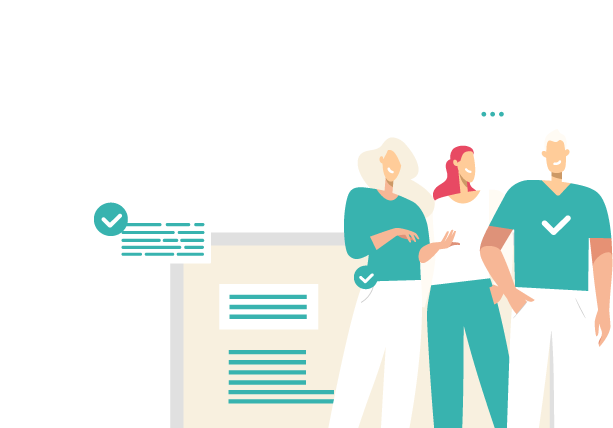

CUSTOMERS
PLURA-AI·XDR은 로그를 근거로 공격을 보고,
WAF·EDR·SIEM·Forensic을 연결해 대응합니다.
PLURA-AI·XDR은 로그를 근거로 공격을 보고,
WAF·EDR·SIEM·Forensic을 연결해 대응합니다.

PLURA는 웹 요청·응답 본문, 계정 행위, 서버·PC 이벤트, 포렌식 증거를 하나의 흐름으로 연결합니다.
고객은 개별 장비의 알람이 아니라 공격자가 어디서 무엇을 했는지를 기준으로 대응할 수 있습니다.
감사 정책, 웹 본문 로그, 계정 행위, 호스트 이벤트를 수집해 탐지 가능한 환경을 만듭니다.
WAF·EDR·SIEM·Forensic 데이터를 연결해 웹 공격 이후 서버 침투와 내부 이동을 추적합니다.
탐지 후 차단·격리·관제 연계·포렌식 증거화를 통해 사고 대응 시간을 줄입니다.